O naturalista alemão Ernst Haeckel acreditava não ser possível ter um bom conhecimento biológico sem conhecer o ambiente em que vivem os organismos. Em 1866, ele criou o termo “Ecologia” para o estudo da relação dos seres vivos entre
si
e/ou com o ambiente em que vivem, ou seja, o próprio planeta Terra.
Além de biólogo, zoólogo, filósofo e médico, Haeckel também era artista da natureza. Observe duas de suas famosas pinturas e, depois, responda às perguntas a seguir.
Nas pinturas de Haeckel, há diferença entre os ambientes representados? Quais são essas diferenças?
Qual a importância do ambiente para os seres vivos?
Objetivos da unidade
Compreender noções iniciais de Ecologia.
Reconhecer relações de dependência entre os seres e destes com os demais componentes do ambiente.
Relacionar as características dos seres vivos ao ambiente em que vivem.
Identificar as principais relações existentes entre os seres vivos.
Compreender como as relações entre os seres vivos interferem na dinâmica ambiental.
Os seres vivos e o ambiente
Quanta vida existe na Terra? Pense em todos os seres vivos que habitam o nosso planeta… Imagine quanta variedade… A diversidade de seres vivos que o nosso planeta abriga é chamada de biodiversidade.
Biodiversidade marinha
Os seres vivos dependem uns dos outros e do ambiente que os cerca. A ciência que estuda as relações dos seres vivos entre si e com o ambiente é a Ecologia.
Ecossistemas
Um ambiente, como o da imagem da biodiversidade marinha, é habitado por diversos animais, algas e micro-organismos. Para que eles sobrevivam, é necessária a presença da luz, da temperatura adequada, da água, do oxigênio, do gás
carbônico e dos sais minerais presentes no ambiente, além de outros fatores. Esse conjunto de seres vivos e fatores do ambiente é denominado ecossistema.
Nos ecossistemas, os seres vivos correspondem aos fatores bióticos, enquanto as características do ambiente que fornecem as condições para sobrevivência (água, ar, solo, luz, calor, substâncias químicas, etc.) são
denominadas fatores abióticos (a = sem; bio = vida).
Os seres vivos de um ecossistema estão sempre interagindo entre si e com o ambiente, por isso dizemos que um ecossistema é dinâmico.
Observe novamente o ecossistema marinho da foto. Nele, podemos encontrar muitos seres vivos, como peixes, esponjas-do-mar, águas-vivas, corais e algas. O conjunto de todos os seres vivos que fazem parte de um ecossistema recebe o nome
de comunidade. Se considerarmos somente o conjunto de organismos da mesma espécie, teremos uma população. Por exemplo, a população de peixes-anjo.
espécie: conjunto de indivíduos semelhantes entre si e que têm a capacidade de se cruzarem, gerando descendentes férteis.
Observe, no esquema a seguir, a organização de um ecossistema com base em um indivíduo (ser vivo):
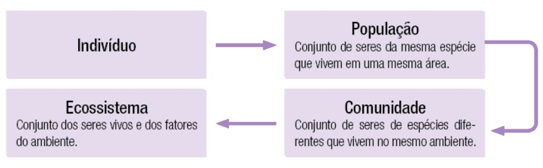
Hábitat e nicho ecológico
Dentro de um ecossistema, existem locais em que cada espécie está melhor adaptada para viver. Esse local onde cada organismo vive, com tudo aquilo de que precisa, recebe o nome de hábitat.
Em seu hábitat, cada ser vivo realiza várias atividades. O conjunto de tudo que um ser vivo faz, a forma como vive, seus hábitos e necessidades é chamado de nicho ecológico.
De uma forma geral, podemos pensar que hábitat é onde o ser vive, enquanto nicho é como ele vive.
O lobo-guará pode ser encontrado no Cerrado (seu hábitat). Ele é, geralmente, solitário e tem uma dieta bem variada, alimentando-se de insetos, pequenos mamíferos e de frutos silvestres (nicho ecológico).
Conexões
O desmatamento, as queimadas, a poluição do solo e das águas, a caça, a emissão de gases do efeito estufa, entre outros fatores, transformam rapidamente os ambientes, reduzindo a diversidade de vida. Muitos seres vivos não conseguem
sobreviver em ambientes degradados e, com isso, correm o risco de desaparecer, ou seja, de entrar em extinção. O tatu-bola, por exemplo, está ameaçado de extinção devido à caça e à destruição dos ambientes naturais onde ele vive.
Tatu-bola, animal existente apenas no Brasil
Já a ararinha-azul é considerada extinta na natureza desde o ano 2000. Isso significa que, desde então, não foram mais encontradas na natureza.
Atualmente, a ararinha-azul só é encontrada em cativeiros.
Na região do país onde você mora, há algum ser vivo ameaçado de extinção? Pesquise e apresente informações sobre onde ele vive, quais são as principais ameaças e algumas ações para garantir a sobrevivência desse ser.
Há um documento, organizado pela União Internacional para a Conservação da Natureza e dos Recursos Naturais, chamado de Lista Vermelha. Nele são divulgados os nomes de espécies de plantas e animais do mundo inteiro que estão
ameaçados de extinção. O objetivo é informar e alertar a sociedade sobre os seres vivos que correm o risco de desaparecer da natureza e incentivar ações que garantam a sobrevivência deles.
Organize as ideias
Vamos colocar em prática alguns conceitos que vimos até agora? Para isso, escolha um ser vivo e faça uma pesquisa sobre ele. Na sequência, preencha a ficha a seguir, completando os conceitos e elabore, em seu caderno, alguns desenhos
que os representem.
Organismo:
Cada indivíduo que faz parte da população.
População:
Conjunto de vários indivíduos da mesma espécie.
Comunidade:
Hábitat:
Nicho ecológico:
Ecossistema:
Na Europa Ocidental, o período da Idade Média foi considerado, durante muitos séculos, como a “Idade das Trevas”, em razão da soberania da Igreja Católica, que insistia em valorizar apenas o plano espiritual, deixando de lado as
necessidades materiais da humanidade. A existência do Tribunal da Santa Inquisição e as perseguições mantidas pelos seus membros aos considerados hereges também contribuíram para que essa época histórica fosse considerada um período de
atraso e retrocesso em relação à Antiguidade Clássica.
Entretanto, é importante salientar que foi durante os últimos séculos da Idade Média que ocorreram mudanças responsáveis pelo estabelecimento de uma nova sociedade, voltada para os seres humanos e suas realizações.
Foi nesse período também que surgiu a burguesia –
termo utilizado inicialmente para denominar os habitantes dos burgos, os quais passaram a promover um comércio rico e variado e, por meio dessa atividade, a obter lucros.
burgos: vocábulo de origem latina utilizado para denominar vilas e cidades medievais. Geralmente cercados por muralhas, os burgos surgiram nos entroncamentos das estradas e muitos deles desenvolveram-se das feiras.
Em virtude do espaço restrito para a realização de atividades agropastoris, os burgueses se dedicaram às atividades manufatureiras e comerciais.
O comércio com o Oriente, especialmente o realizado pelos mercadores de Gênova e Veneza, proporcionou, na Europa Ocidental, o consumo de produtos raros – possibilitando grandes lucros aos comerciantes – e trocas culturais que acabaram,
aos poucos, por alterar as sociedades europeias. Foi por meio desses viajantes que novos costumes e conhecimentos chegaram à Europa.
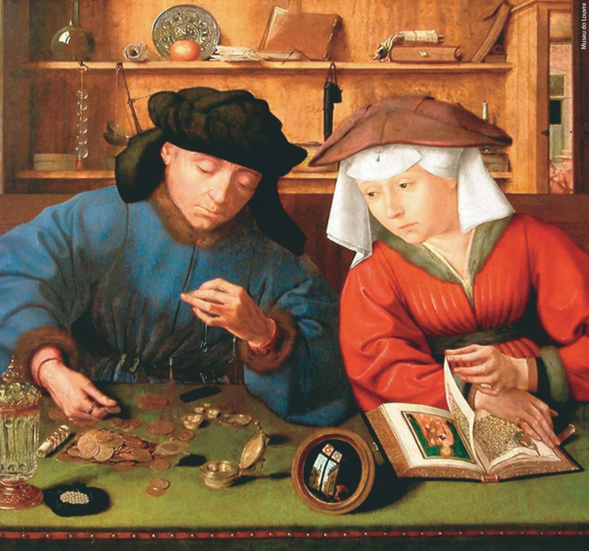
MASSYS, Quentin. O prestamista e sua esposa. 1514. 1 óleo sobre tela, color., 71 cm x 68 cm. Museu do Louvre, Paris.
Na obra de Quentin Massys, há a representação de um casal cuja ocupação era o empréstimo a juros
Movimento humanista: o homem no centro do mundo
O movimento humanista, central para o Renascimento, pode ser relacionado com o comércio e com os conflitos entre o Oriente e o Ocidente durante a Baixa Idade Média. Trata-se de um movimento que se caracterizou pelo retorno ao estudo da
cultura clássica e foi fortemente marcado pelo antropocentrismo, ou seja, pela valorização do ser humano e de todas as suas realizações.
antropocentrismo: a valorização do homem promoveu o estímulo à racionalidade e aos prazeres oriundos dos sentidos. Dessa forma, a apreciação de uma produção artística visual passou a
ser incentivada e valorizada. Na Grécia Antiga, a valorização do prazer oriundo da estimulação dos sentidos era denominada hedonismo.
Os humanistas contestaram a cultura medieval e se voltaram à cultura da Antiguidade Clássica em busca da valorização do homem.
Conexões
Leia o fragmento a seguir e, depois, responda às questões propostas.
O movimento intelectual mais característico do Renascimento foi o Humanismo, um programa educacional baseado no estudo da antiga literatura grega e romana. A atitude humanista para com a Antiguidade diferia dos eruditos da Idade
Média. Enquanto estes buscavam adaptar o conhecimento clássico a uma concepção cristã do mundo, os humanistas do Renascimento valorizavam a literatura antiga por ela própria – por seu estilo claro e elegante e por sua percepção da
natureza humana. Com os clássicos da Antiguidade, os humanistas esperavam apreender o muito que não lhes ensinaram os escritos medievais – esperavam, por exemplo, aprender a viver bem neste mundo. [...] Usavam o conhecimento
clássico para alimentar o seu novo interesse pela vida terrena.
PERRY, Marvin. Civilização ocidental: uma história concisa. São Paulo: Martins Fontes, [19--?]. p. 271.
1. Explique a diferença entre os estudos da cultura clássica promovidos pelos humanistas e os da cultura clássica promovidos pelos eruditos da Idade Média.
2. O Humanismo pode ser considerado apenas um movimento de retorno à cultura clássica? Justifique sua resposta.
Aprecie
Observe, ao lado, um estudo de corpo humano produzido por Michelangelo.
1. Observando o estudo de Michelangelo, cite os conhecimentos que o artista deveria ter, em sua opinião, para produzir a figura de David.
Como são feitas as sombras do desenho? Que técnica foi utilizada?
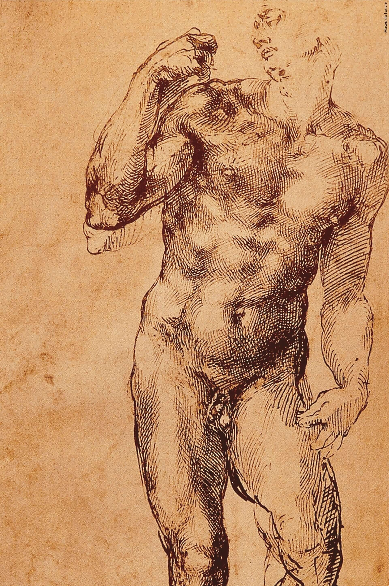
MICHELANGELO. Homem nu, em pé.
[ca. 1505]. 1 desenho a bico de pena, 37,5 cm x 19,5 cm. Sala de Exposições, Museu do Louvre, Paris.
Observe outros estudos realizados por Michelangelo sobre o corpo humano.
Renascimento: o adeus definitivo à Idade Média
O Renascimento foi um movimento de renovação cultural que ocorreu na Europa entre os séculos XIV e XVI e teve manifestações em todas as áreas do conhecimento. Esse movimento promoveu uma grande mudança na maneira de se observar o mundo,
uma vez que os seres humanos passaram a buscar explicações não somente para a vida espiritual como também para a vida terrena.
Ao colocar a figura humana como o centro de todos os estudos, interesses e produções, o Humanismo lançou as bases para o Renascimento. O processo de valorização da vida terrena permitiu o rompimento com as doutrinas impostas pela Igreja
Católica, durante a Idade Média, que consideravam Deus como o centro do mundo.
O Renascimento teve início na Península Itálica, alastrando-se por várias outras regiões da Europa. Como são várias as divisões propostas para esse período,
optamos por adotar as divisões frequentemente encontradas na História da Arte: Trecento (século XIV), Quattrocento
(século XV) e Cinquecento (século XVI).
Observe, no mapa histórico da Península Itálica, as principais cidades que serviram de centros renascentistas.
Trecento
A primeira fase do Renascimento foi denominada Trecento por tratar-se do século XIV (1301-1400), no qual todos os anos, com exceção do último, iniciam-se com mil e trezentos – por isso
trecento.
No século XIV, a sociedade europeia era fortemente influenciada pela Igreja Católica e, portanto, pela religiosidade. Os artistas não fugiam disso, reproduzindo temas religiosos, os quais acabaram por marcar a arte renascentista,
especialmente durante esse período. Entretanto, mesmo mantendo a religiosidade como eixo temático, os artistas do Renascimento passaram a retratar temas bíblicos cada vez mais ambientados em cenários terrenos. Nesse sentido, podemos
dizer que o naturalismo foi uma das características marcantes do movimento renascentista.
Um dos grandes nomes da pintura durante o Trecento foi Giotto. Observe, a seguir, algumas de suas obras.
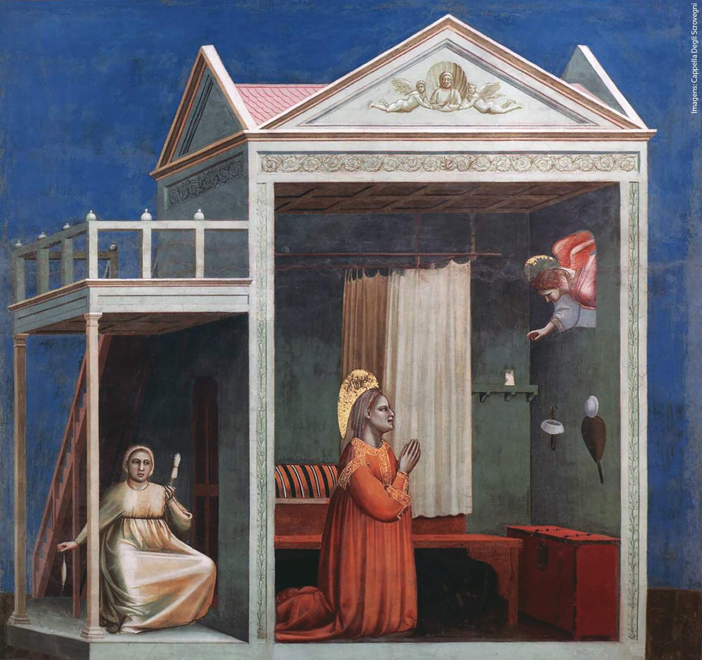
GIOTTO. Anunciação de Santa Ana. [ca. 1304]. 1 afresco, color., 200 cm × 185 cm. Cappella Degli Scrovegni, Pádua, Itália.
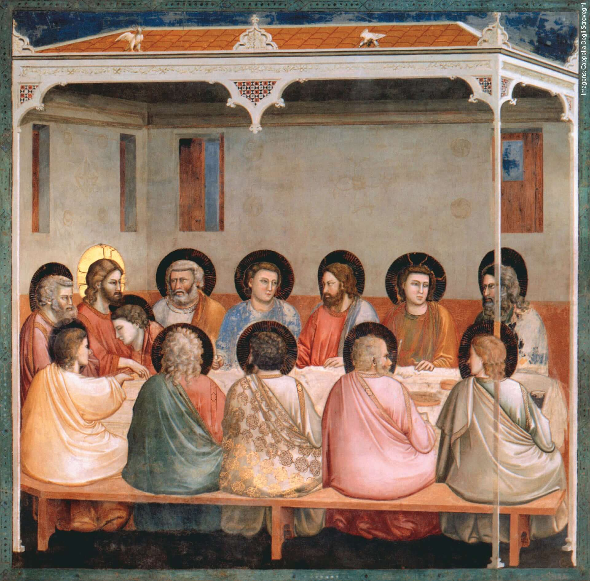
GIOTTO. Última ceia. [ca. 1304]. 1 afresco, color., 200 cm × 185 cm. Cappella Degli Scrovegni, Pádua, Itália.
Obra em foco
Ceni Piero Giovanni, mais conhecido como Cimabue, foi um dos precursores do movimento renascentista. Ele realizou diversas pinturas em madeira para a Igreja de Santa Maria Novella, em Florença. Nessa cidade, teria começado sua carreira
sob a influência de pintores gregos contratados, por Florença, para a realização de trabalhos e para ensinar jovens artistas. De acordo com Giorgio Vasari, Cimabue teria sido um desses jovens.
Observe, ao lado, uma das obras de Cimabue.
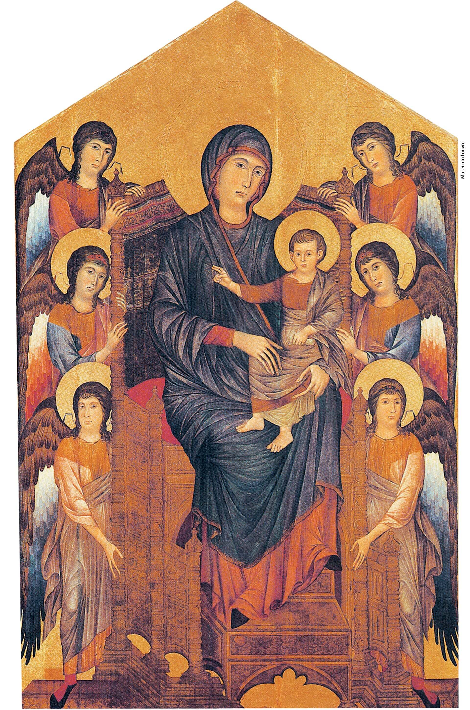
CIMABUE. A Virgem e a Criança em majestade rodeadas de seis anjos. [ca. 1270]. 1 têmpera sobre madeira, 427 cm x 280 cm. Museu do Louvre, Paris.
Na obra, é possível observar a forte influência da arte bizantina por conta da representação das figuras e dos elementos dourados
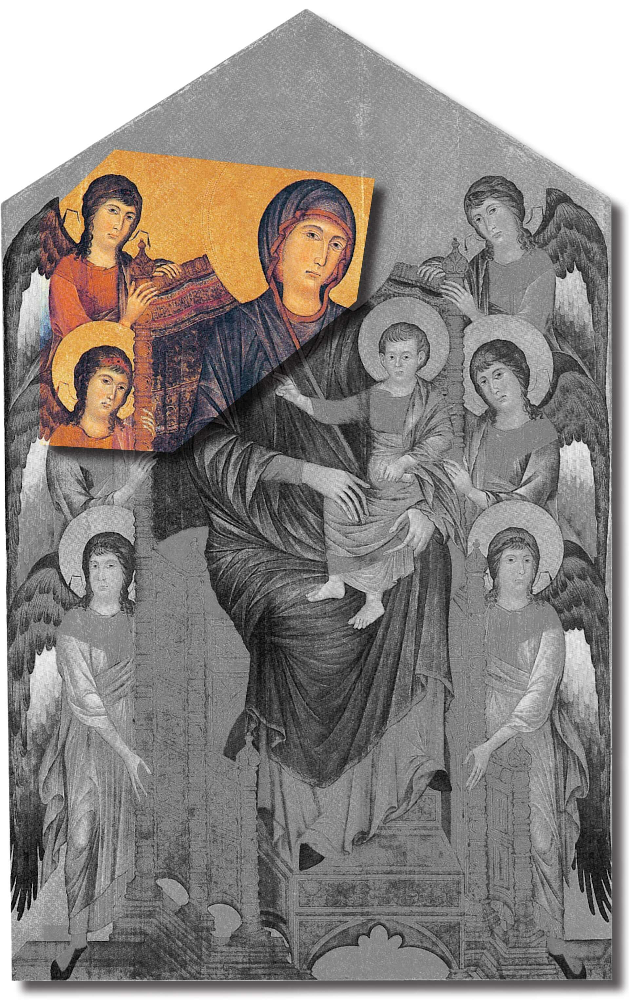
O uso de expressões austeras e solenes era marca registrada dos artistas desse período.
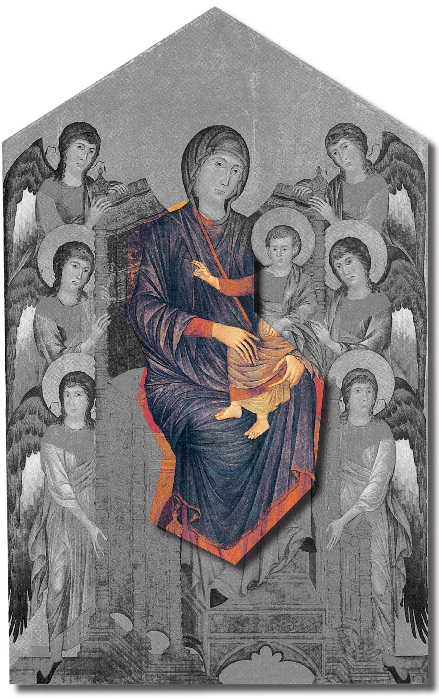
O azul intenso da veste da santa, em contraste com as folhas de ouro do fundo, leva o observador a focar sua atenção na figura de Maria.
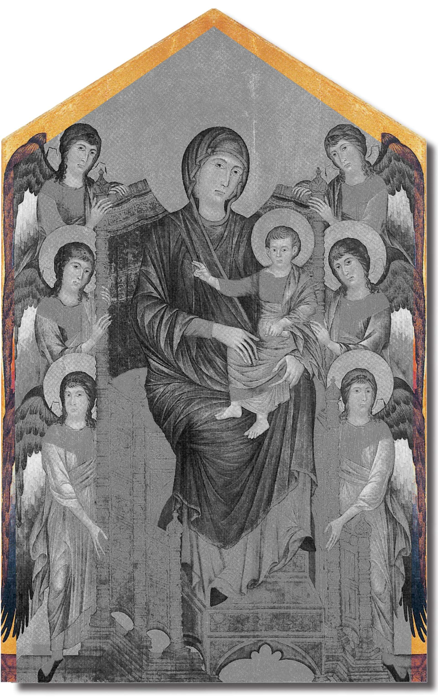
As dimensões da obra indicam que ela foi produzida para ser um elemento de devoção, fato que é comprovado pelo lugar em que ainda se encontra atualmente (interior de uma igreja).
Organize as ideias
Pesquise uma obra do período Trecento que tenha características semelhantes a que estudou e explique por que você a escolheu. Que elementos presentes nela podem ser comparados com os da obra de Cimabue?
Sala do artista
Muito bem temperado
Observe a referência da obra de Cimabue. Nela, aparece a informação de que o artista utilizou a têmpera, técnica adotada pelos pintores italianos que consistia em usar uma mistura de pigmentos (extraídos da terra, da
argila, de musgos, de pedras moídas, etc.) com ovos. Portanto, eram os ovos que davam a liga entre os diversos elementos da natureza. A tinta assim produzida secava muito rapidamente, fato que impedia os artistas de acrescentar detalhes
às partes já produzidas.
A técnica de pintura com tinta a óleo, segundo algumas fontes, foi criada em 1410, na Holanda, por Jan van Eyck. Entretanto, há relatos do emprego de tipos diferentes de óleos em produções artísticas desde antes de
Cristo. Diferentemente do que ocorre com a tinta obtida pela têmpera, os pigmentos misturados com óleo demoram mais para secar, possibilitando ao artista mais tempo para a execução de seus trabalhos.
Eram os próprios artistas que produziam as tintas que utilizavam. Embora possuíssem o status de artesãos, muitos deles viveram em extremas dificuldades, o que os levava a buscar um mecenas para protegê-los e patrociná-los.
Entretanto, se os artistas podiam desfrutar de algumas vantagens e confortos, também estavam sujeitos às exigências de seus senhores.
Fazer artístico
Têmpera
Nesta atividade, você vai produzir suas próprias tintas e aplicá-las utilizando a técnica da têmpera.
Materiais
Elementos da natureza para produção das cores
Ovos
Recipientes para triturar, misturar e preparar as tintas
Tela ou um pedaço de madeira liso
Lápis grafite
Pincéis
Algodão ou papel-toalha
Como fazer
Forme uma dupla com um colega e, juntos, criem um projeto de pintura. Em seguida, elaborem um plano do que será retratado, destacando as cores das tintas necessárias para o trabalho.
Selecionem os elementos da natureza para a produção das tintas.
Misturem os pigmentos produzidos com ovo para formar a tinta.
Ao iniciar o trabalho de pintura, lembrem-se de que esse tipo de técnica permite a secagem das tintas em um curto espaço de tempo.
Apresentem à sua turma a obra criada por vocês.
O afresco também foi uma técnica muito utilizada no Renascimento para adornar as paredes internas de igrejas, conventos, palácios e das casas dos ricos burgueses. Conhecida desde a Antiguidade, essa técnica foi
aprimorada pelos italianos, que se especializaram na produção de murais (nome atribuído às pinturas de grandes extensões).
Para executar o afresco, cabia ao pintor, enquanto a argamassa ainda estivesse molhada, aplicar as tintas. Quando o reboco da parede secava, a pintura estava pronta. Leia, a seguir, as observações feitas sobre a técnica do afresco.
Trabalha-se sobre a argamassa fresca e não se abandona o trabalho enquanto não estiver acabado aquilo que naquele dia se queria fazer. Porque quando se demora a pintar, a argamassa cria uma crostazinha, seja em decorrência do calor,
do frio, do vento ou do gelo, o que embolora e mancha todo o trabalho. Por isso a parede que se está pintando precisa ser continuamente molhada, e as tintas usadas devem ser todas de terra, e não de minerais, e o branco deve ser de
travertino cozido.
VASARI, Giorgio. Vidas dos artistas. São Paulo: Martins Fontes, 2011. p. 48-49.
Essa técnica foi aprimorada durante o Quattrocento e o Cinquecento, culminando na genialidade da obra de Michelangelo.
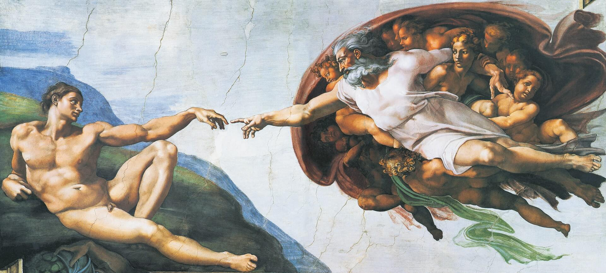
MICHELANGELO. Criação de Adão. 1510. 1 afresco, color., 280 cm x 570 cm. Capela Sistina, Vaticano.
Uma das mais importantes obras das artes visuais é um afresco pintado por Michelangelo no teto da Capela Sistina, representando o momento em que Deus criou o primeiro homem
Quattrocento
A segunda fase do Renascimento é denominada Quattrocento e corresponde ao período do século XV (1401-1500). Foi marcada pelo despontar de Florença como o grande centro cultural e artístico do Renascimento. A
Família Médici foi importante incentivadora da arte do período e, graças a esses mecenas, a cidade de Florença abriga, na atualidade, significativa diversidade da produção artística do Ocidente.
São expoentes desse período o arquiteto Filippo Brunelleschi, o escultor Donatello e os pintores Fra Angelico e Sandro Botticelli.
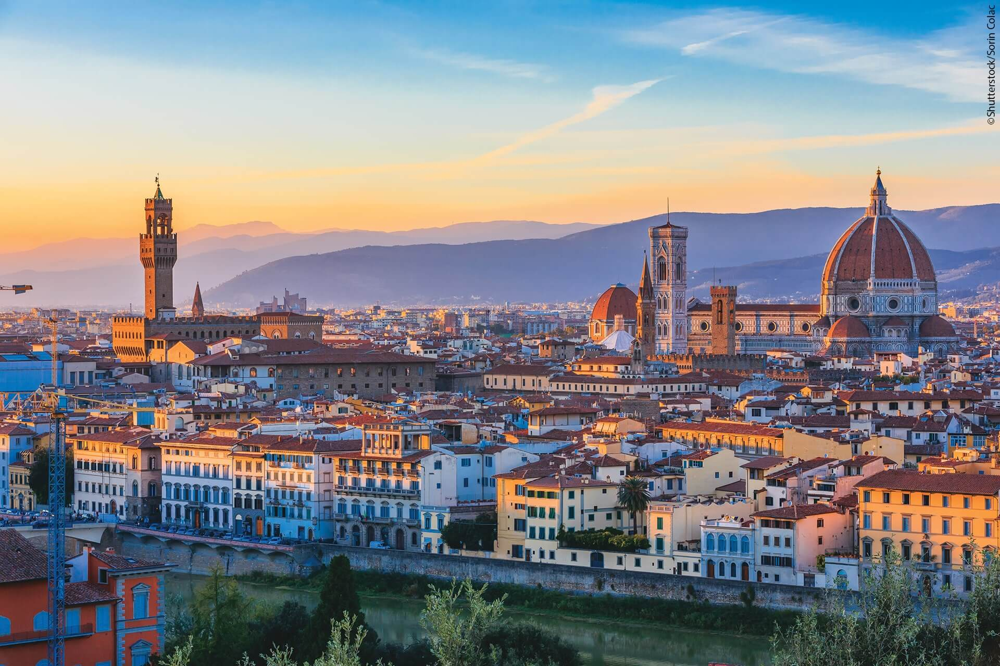
Foto da cidade de Florença. À esquerda, o Palazzo Vecchio, centro do poder político da Florença renascentista; no centro, a cúpula do Batistério; e, à direita, o Duomo (Catedral de Santa Maria del Fiore)
Curiosidades
A arquitetura renascentista encontra-se representada com todo o seu esplendor na cúpula da Catedral de Santa Maria del Fiore. A catedral começou a ser erguida em 1296 e sua construção foi interrompida algumas vezes por causa de pestes,
de guerras e de disputas pelo poder político.
Desde o início, um dos grandes desafios para a construção da catedral foi a edificação da cúpula, pois o projeto previa uma estrutura muito alta e muito pesada (45 metros de largura e 100 metros de altura). Após vários projetos
malsucedidos, Filippo Brunelleschi foi contratado e iniciou seu trabalho em 1420. O projeto do arquiteto, por não utilizar andaimes, que furavam as paredes do templo e enfraqueceriam a construção, foi considerado bastante inovador
para o seu tempo.
Brunelleschi projetou travamentos horizontais em intersecção com travamentos verticais, os quais foram recobertos por duas paredes: uma interna e outra externa. A base da cúpula foi produzida com vários anéis separados, erguidos um a
um. A função desses anéis, também denominados tambores, era reduzir o peso da estrutura da cúpula sobre as paredes, que foram estruturadas no estilo espinha de peixe (tipo de amarração dos elementos que compõem a
estrutura).
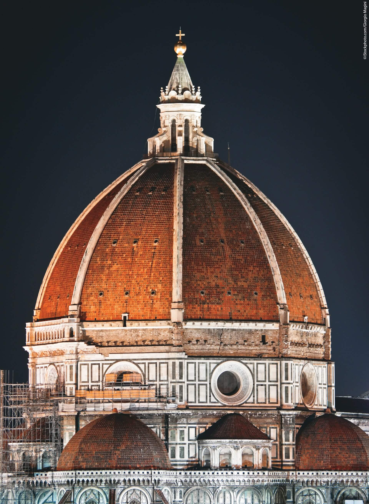
WIRTZ, Rolf C. Florença: arte e arquitetura. Alemanha: Könemann, 2001. p. 50.
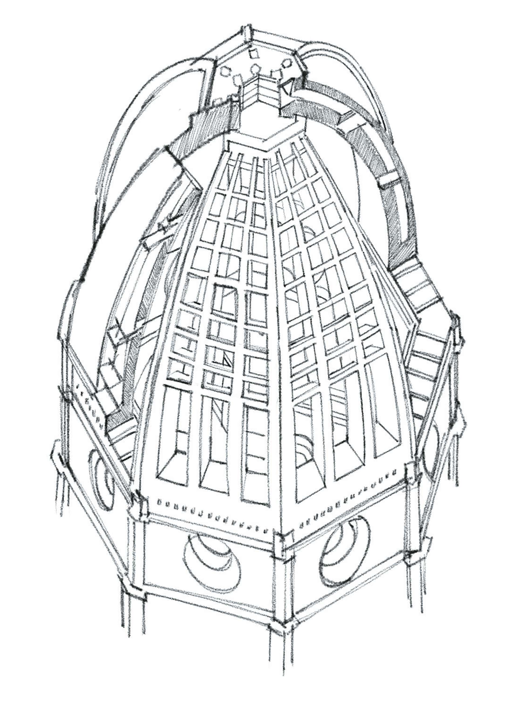
Planta da cúpula da Catedral de Santa Maria del Fiore
A cúpula da Catedral de Santa Maria del Fiore é a quarta maior cúpula de um templo católico. Leonel Battista Alberti, em 1434, ficou tão admirado com a construção que afirmou que a sombra da cúpula seria capaz de “cobrir todas as gentes
da Toscana”.
Sala do artista
Para muitos estudiosos da pintura, uma das maiores contribuições do Renascimento foi a invenção da perspectiva linear, ou científica, com um único ponto de fuga. Trata-se da criação de um plano geométrico disposto sobre uma superfície
bidimensional com o objetivo de que o observador tenha uma visão tridimensional da cena retratada. Para compreender melhor, observe a obra de Carlo Crivelli.
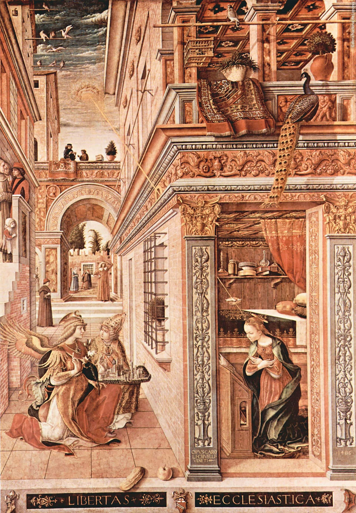
CRIVELLI, Carlo. Anunciação com São Emidius. 1486. 1 óleo sobre madeira, transferido para tela, 207 cm x 147 cm. National Gallery, Londres.
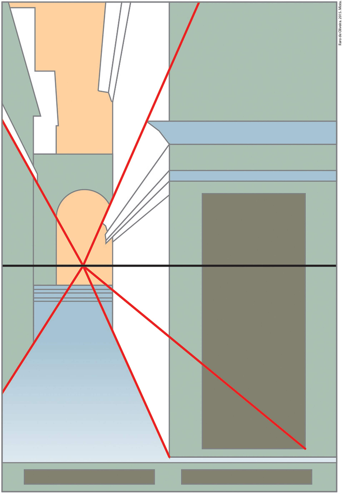
O esquema com as linhas apresenta a maneira como Carlo Crivelli planejou sua obra. O ponto de fuga, marcado pelo ponto de interseção entre as linhas, foi disposto no lado esquerdo da imagem. Para ele, convergem todas as linhas, o
que fornece a impressão de que a janela está em um plano mais distante do observador, embora, na verdade, toda a cena tenha sido retratada em um plano bidimensional. O traço horizontal representa a linha do horizonte e se encontra
no mesmo nível que os olhos do observador
Imitar não é fácil
Mesmo que a obra de um determinado artista possa parecer mais “realista” do que a de outro, toda imagem figurativa é uma imitação. O que se modifica é a fidelidade da imagem em relação àquilo que pretende imitar.
arte figurativa: aquela que, em diferentes momentos da história da arte, procura reproduzir formas que podem ser encontradas na natureza.
Troca de ideias
Qual das obras abaixo pode enganar o olho humano? Por quê? Em duplas, escolham uma delas e apontem quais aspectos são importantes para a imitação ter sucesso. Que semelhança é possível identificar entre a obra de Richard Estes e a de
Carlo Cravelli?
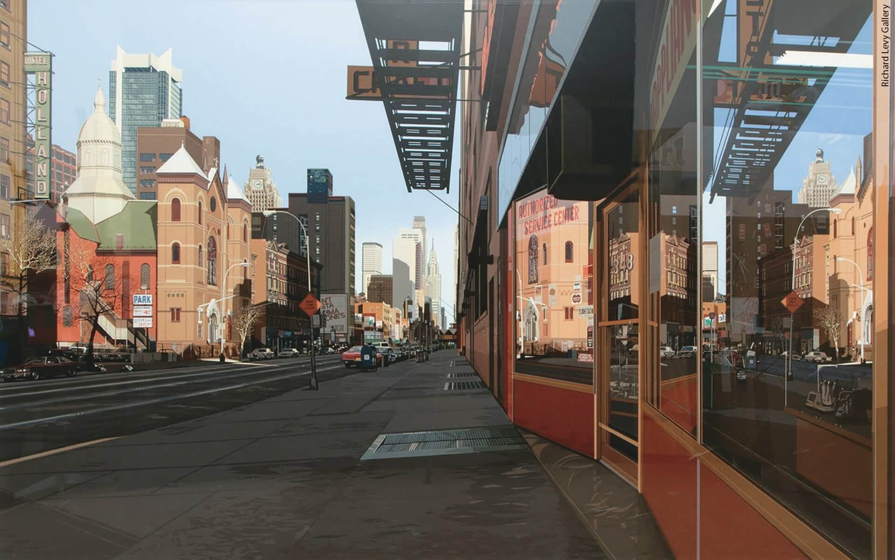
ESTES, Richard. Hotel Holland. 1984. 1 serigrafia colorida sobre papel canson, 113,3 cm x 181,3 cm. Richard Levy Gallery, Novo México, EUA.
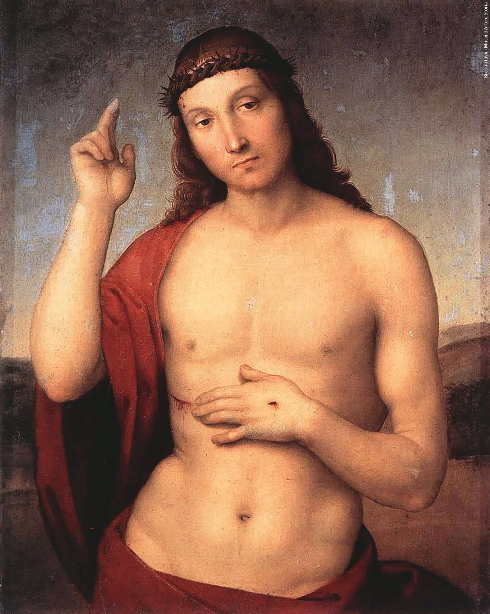
RAPHAEL [Raffaello Sanzio]. Cristo benedicente. 1506. 1 óleo sobre madeira, 31,6 cm x 25,4 cm. Brescia Civici Musei d’Arte e Storia, Brescia.
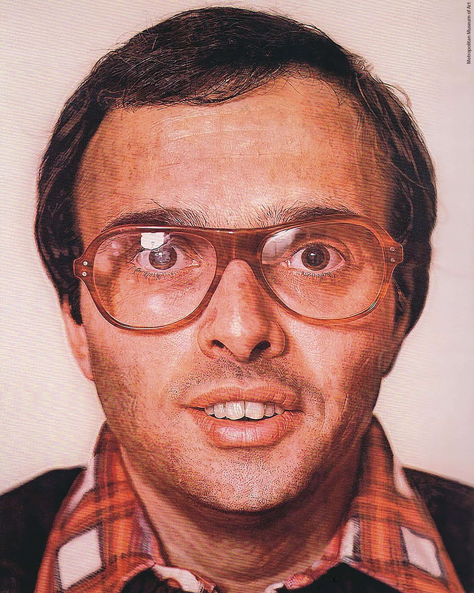
CLOSE, Chuck. Mark. [1978 ou 1979]. 1 acrílico sobre tela. Metropolitan Museum of Art, Nova Iorque.
A imitação é tão importante para a sociedade que antigas histórias sobre artistas habilidosos na arte da imitação são contadas até os dias de hoje. Uma delas trata de Zeuxis, famoso pintor da Grécia Antiga. Conta--se que Zeuxis
participou de uma disputa com outro artista igualmente habilidoso, chamado Parraso. Os dois competiam para descobrir qual era o mais talentoso na arte da pintura.
A pintura apresentada por Zeuxis foi a de um cacho de uvas. Quando exibiu o quadro, dois pássaros, imediatamente, vieram bicar as frutas. Feliz com a façanha, Zeuxis pediu ao concorrente que desembrulhasse seu quadro. Nesse momento,
Parraso revelou que sua pintura, na verdade, imitava um quadro embrulhado. Zeuxis, que tinha sido enganado pela ilusão criada, reconheceu, então, a superioridade de Parraso na arte da imitação.
Os artistas do Renascimento retomaram a ideia de imitação da Antiguidade Clássica, mas não se restringiram a apenas copiar as imagens da natureza. Determinados a superar qualquer imitação já concebida, eles corrigiam a natureza, a fim
de produzir uma imagem idealizada das coisas.
Cinquecento
Essa fase, que compreende o século XVI (1501-1600), marcou o esplendor do Renascimento na Península Itálica. A ideia do uomo universale, ou seja, do homem universal, atingiu todas as áreas do conhecimento e passou a ser
observada em várias outras partes do continente europeu. Uma percepção acurada dos seres humanos, que incluía diversos prismas (parte física, espiritualidade, intelecto, etc.), estava presente em toda a sociedade europeia.
A Igreja Católica, inicialmente contrária ao movimento humanista, soube repensar sua postura e assumiu um papel importante de mecenato e centro de estudos humanísticos.
As artes plásticas adquiriam outro status, passando de artesanato para artes liberais. Esse período foi caracterizado pelas obras de Donato Bramante, Leonardo da Vinci, Michelangelo, Ticiano, Tintoretto e Rafael.
TINTORETTO. Cristo diante de Pilatos. [1566 ou 1567]. 1 óleo sobre tela, 515 cm x 380 cm. Scuola Grande di San Rocco, Veneza.
O chiaroscuro (claro-escuro) foi outra técnica aperfeiçoada pelos artistas do Renascimento. Produzindo contraste entre cores claras e escuras, os pintores, em suas obras, destacavam os elementos principais
e obscureciam os secundários. A perspectiva científica e o chiaroscuro foram técnicas utilizadas com o objetivo de retratar os corpos humanos e as cenas representadas de forma intensa e realista. Por isso a grande
expressividade das obras produzidas nesse período.
Escultura
Os avanços das técnicas e os resultados obtidos na pintura e na arquitetura renascentista também podem ser observados na escultura desse período. As esculturas gregas e romanas da Antiguidade serviram de inspiração para a criação de
obras que representavam toda a beleza física dos seres humanos. Apesar dos tamanhos monumentais de muitas dessas produções, a beleza contemplada também envolvia imperfeições e expressões de sentimentos.
MICHELANGELO. Escravo a acordar. [ca. 1530]. 1 escultura em mármore, 275 cm de altura. Galleria dell´Accademia, Florença.
Ao observar a obra inacabada do escravo a acordar, temos a sensação de que o homem está saindo da pedra como se estivesse a se libertar
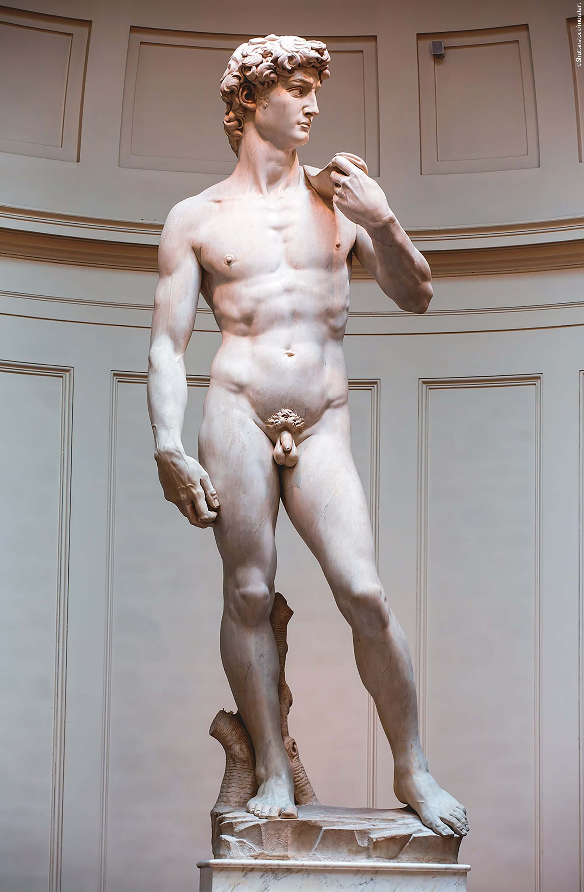
MICHELANGELO. David. 1504. 1 escultura em mármore, 434 cm de altura. Galleria
dell´Accademia, Florença.
Ao observar David, percebemos a grandeza de um trabalho que transforma o mármore em uma representação tão bela e detalhada do corpo humano. A escultura representa David, herói bíblico, momentos antes de enfrentar o gigante Golias
Interseção
Compare a escultura de Praxíteles, escultor da Grécia Antiga, com a obra David, de Michelangelo. Que semelhanças é possível identificar entre elas?
Uma das características do estatuário renascentista era o conceito de contraposto, que consistia na representação da figura humana em uma posição em que uma das pernas sustentava totalmente a escultura, enquanto a outra
ficava livre, conferindo dinamismo à obra.
A postura resultante – chamada contrapposto (contraposto) – produz todas as espécies de curvaturas sutis: o arqueamento do joelho “livre” resulta em um leve movimento giratório da pélvis, um arqueamento compensatório da coluna
vertebral e uma inclinação de ajustamento dos ombros. Como os requintados detalhes do Partenon, essas variações nada têm a ver com a capacidade da estátua de manter-se ereta, mas acentuam intensamente a sua impressão de organismo
vivo [...].
JANSON, H. W.; JANSON, Anthony F. Iniciação à história da Arte. São Paulo: Martins Fontes, 2009. p. 60.
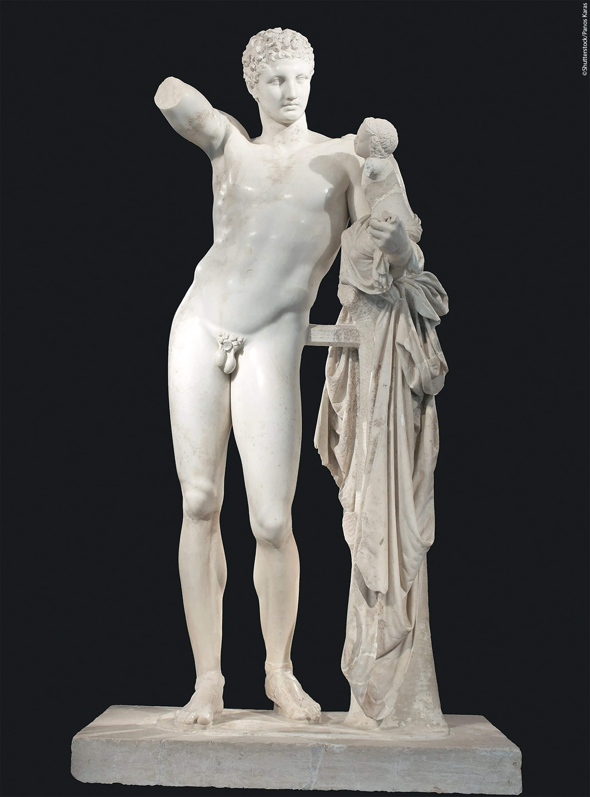
PRAXÍTELES. Hermes carregando o infante Dionísio. [entre 330 e 320 a.C.]. 1 escultura em mármore, 2,15 m de altura. Museu Arqueológico de Olímpia, Olímpia.
Retratos e cenas
É importante lembrar que, comumente, muitas das características das obras artísticas são reflexo das sociedades nas quais foram produzidas. Por esse motivo, ao observarmos as diferentes artes, podemos analisar os valores de determinado
grupo, suas organizações sociais e econômicas, credos, vestuários, costumes, tradições, etc.
No Renascimento, a pintura e a escultura foram utilizadas para enaltecer ou simplesmente eternizar momentos importantes na vida das pessoas retratadas. Era ainda uma forma de demonstrar o prestígio, a prosperidade e o poder que tinham
diante de seus pares e da sociedade na qual estavam inseridas.
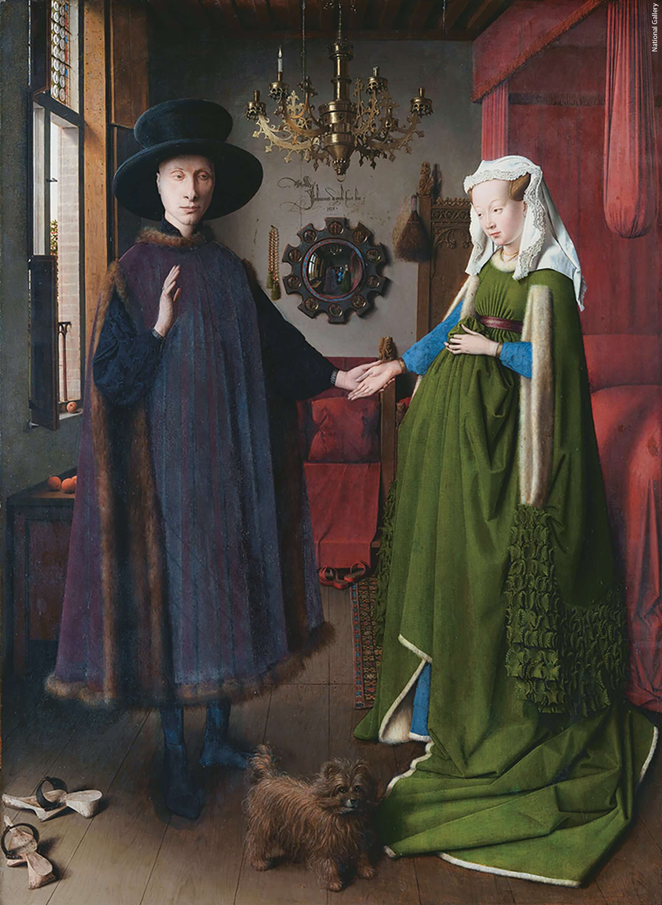
VAN EYCK, Jan. Retrato de Giovanni Arnolfini e sua esposa. 1434. 1 óleo sobre carvalho,
82 cm x 60 cm. National Gallery, Londres.
O comerciante Arnolfini encomendou essa obra para registrar seu casamento. Ao analisarmos a riqueza com a qual os noivos se apresentam e o luxo do quarto que serve de cenário, podemos concluir que a pretensão era salientar sua
posição de poder e seu status social
Se é certo afirmar que as artes visuais fornecem características sobre determinados períodos históricos, também é correto dizer que as obras de arte estão repletas de críticas a essas mesmas sociedades. Vários foram os artistas que, por
vingança ao mecenas exigente e sovina, ou como forma de registrar seu descontentamento, inseriram em suas obras elementos que simbolizavam posições pessoais contrárias à ordem vigente.
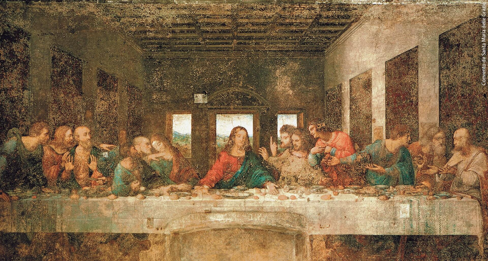
DA VINCI, Leonardo. A última ceia. 1498. Técnicas mistas, 460 cm x 880 cm. Convento de Santa Maria delle Grazie, Milão.
Uma das obras mais conhecidas de Leonardo da Vinci retrata a última ceia de Jesus Cristo com seus apóstolos
Obra em foco
Analise o autorretrato de Albrecht Dürer.
1. A inscrição no alto do retrato afirma “Tudo ocorrerá de acordo com a vontade do alto”. Portanto, a religiosidade do artista e a confiança nos desígnios de Deus são evidentes.
2. A obra foi produzida quando Dürer viajava entre as cidades de Basileia e Estrasburgo. Ele havia sido chamado pela família de volta à casa paterna, em Nuremberg, para oficializar o noivado com a jovem Agnes Frey, com a qual se
casaria um ano depois. O retrato seria um presente para a noiva. A flor de cardo que o artista tem em suas mãos pode ser interpretada como sorte no amor e fidelidade ao ser amado, uma mensagem muito direta para sua futura esposa.
No autorretrato de Albrecht Dürer, é possível observar o uso da técnica do chiaroscuro, pois há um destaque em seu rosto e em suas mãos, as quais são apresentadas com detalhes expressivos da anatomia humana.
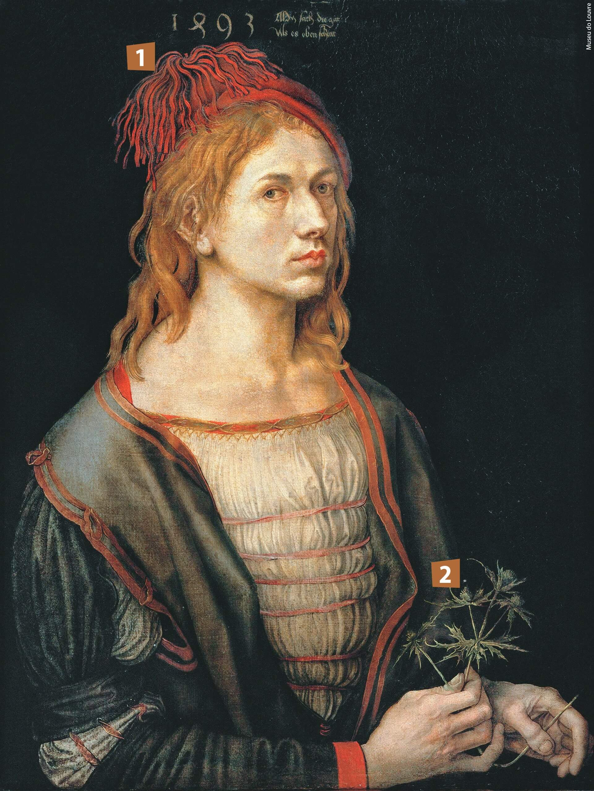
DÜRER, Albrecht. Autorretrato aos 22 anos. 1493. 1 óleo sobre linha, transferido para pergaminho, 57 cm x 45 cm. Museu do Louvre, Paris.
Fazer artístico
Autorretrato
Em uma época em que ainda não havia a fotografia, a pintura foi a forma mais comum de produzir retratos. Além de deixar registrados seus contratadores, muitos artistas se autorretrataram em cenas encomendadas ou produziram, por
iniciativa própria, seus autorretratos.
Nesta atividade, você vai produzir um autorretrato que apresente elementos que possam comprovar seus hábitos, preferências e cenas do seu cotidiano. Em outras palavras, ao analisar seu retrato, o observador deverá ter condições de
saber um pouco mais a seu respeito.
Materiais
Máquina fotográfica ou celular com câmera
Vestuário
Objetos que fazem parte de sua rotina
Cenário
Como fazer
Liste suas principais caraterísticas e os elementos do seu cotidiano que você deseja que façam parte do autorretrato.
Escolha o cenário. Ele deve fazer parte das suas atividades habituais.
Fotografe a cena a ser retratada.
Produza um desenho com base na foto.
Apresente-o na próxima aula.
Hora de estudo
1. Sobre o movimento humanista, assinale a(s) afirmativa(s) correta(s).
I. Ocorreu na Europa durante o século XIX e teve como inspiração o Renascimento.
II. O estudo da cultura clássica foi essencial para que houvesse a valorização dos seres humanos e de suas realizações.
III. O teocentrismo medieval deu lugar ao antropocentrismo.
a) Todas as afirmativas estão corretas.
b) Todas as afirmativas estão erradas.
c) As afirmativas I e II estão corretas.
d) As afirmativas I e III estão corretas.
e) As afirmativas II e III estão corretas.
2. Sobre a arte renascentista, analise as afirmativas a seguir.
I. Movimento de renovação cultural que teve início na Península Itálica durante o século XIV.
II. A burguesia, que desejava firmar sua posição na sociedade europeia no início da Idade Moderna, contribuiu para o desenvolvimento da arte renascentista.
III. Os artistas renascentistas promoveram um retorno aos temas religiosos após estes serem proibidos pela Igreja Católica.
a) Todas as afirmativas estão corretas.
b) Todas as afirmativas estão erradas.
c) As afirmativas I e II estão corretas.
d) As afirmativas I e III estão corretas.
e) As afirmativas II e III estão corretas.
3. Sobre as artes visuais renascentistas, assinale as afirmativas corretas
(01) Os temas religiosos passaram a ser retratados com mais naturalismo.
(02) O hedonismo, ou seja, a busca pelo prazer em apreciar belas obras, pode ser considerado uma característica do movimento.
(04) A técnica do afresco foi bastante utilizada no Renascimento e está presente na decoração interna de muitos templos, edifícios públicos e palácios.
(08) A escultura, em virtude da dificuldade de obtenção de materiais para sua produção, não apresentou grande destaque entre as artes visuais.
(16) Entre os séculos XIV e XVI, ocorreram muitas inovações técnicas nas artes visuais, fruto do estudo, da observação e da experimentação promovidos por artistas e pensadores da época.
4. (UEL – PR) Analise a figura e leia o texto a seguir.
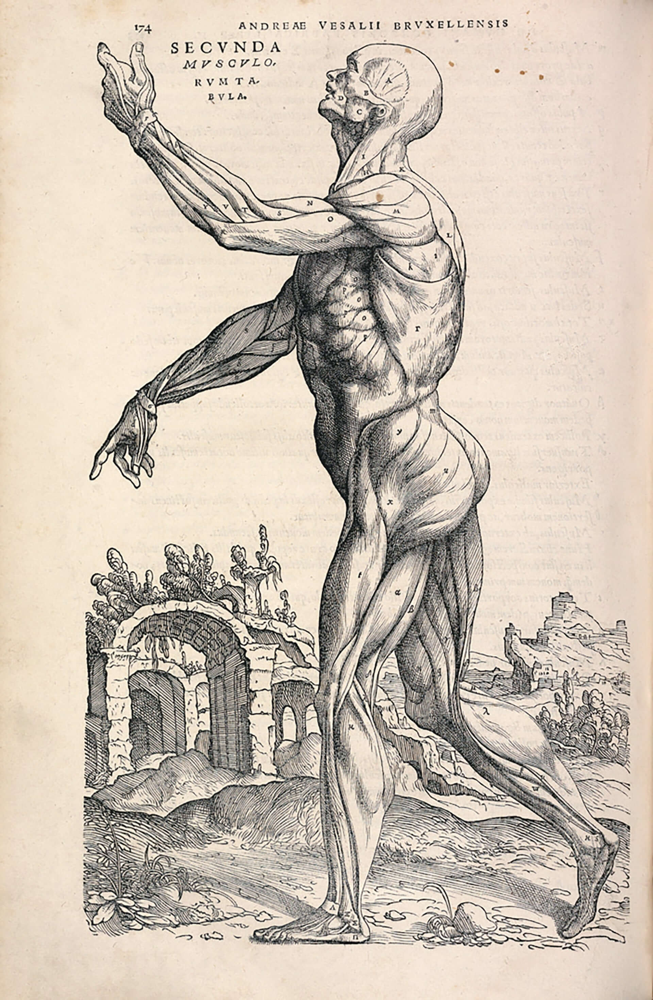
Andreas Vesalius (1514-1564) In: De Humani Corporis Fabrica. Gravura 25, dos músculos. Basiléia: 1543.
“Naturalmente, a preocupação maior estava na representação do ser humano. A arte renascentista nunca se distanciou demasiado dessa sua vocação antropocêntrica. Nesse momento, a preocupação com a figuração da imagem humana se
concentraria na representação do corpo, percebido em toda a extensão de sua carnalidade, suas formas, seu peso, sua textura, sua ossatura, sua musculatura, sua anatomia, enfim.”
(SEVCENKO, Nicolau. O Renascimento. São Paulo: Atual, 1994. p. 62.)
Com base na imagem e no texto, considere as afirmativas a seguir.
I. Vesalius expressa na imagem uma visão idealizada de homem.
II. O artista se apoia em uma concepção religiosa de homem.
III. A imagem procura reproduzir os movimentos do corpo humano.
IV. O nu se torna um tema recorrente na arte ocidental da época.